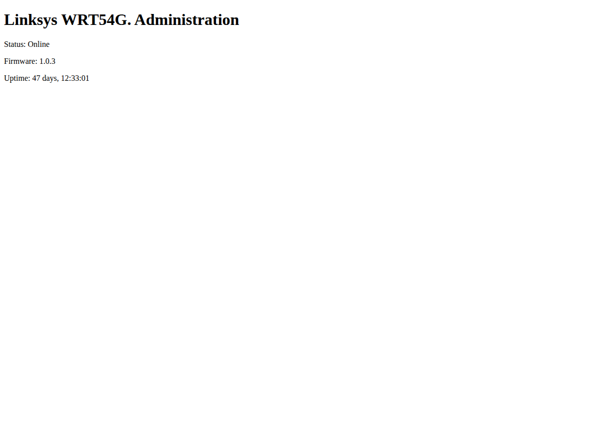

Exercise 4B: Escalation Espresso
Before You Begin
You have compromised low-privilege accounts on multiple cafe devices through earlier exercises. Foothold access is a starting point, not the end. The next step is privilege escalation: the process of using misconfigurations to gain root-level access from an unprivileged account.
Two devices in the Bean & Byte network have distinct escalation vectors. You will exploit both.
Make sure you have:
- Completed prior Coffee Shop exercises (especially Exercises 3 and 7)
- VPN connected and verified
- SSH client available
- Credentials:
admin:admin(gateway),barista:C0ff33_Br3w#(barista workstation)
Engagement Status
[Reconnaissance] → [Enumeration] → [Exploitation] → [Credential Access] → >> Privilege Escalation <<
Scenario
Your penetration test of the Bean & Byte Cafe network has reached the escalation phase. You hold low-privilege SSH access to the gateway router and the barista workstation. Neither account is root. Your objective: find a path to root-level file access on both devices and read the protected flag files.
The gateway has a custom binary with suspicious permissions. The barista workstation has an automated task that runs with elevated privileges from a location you can write to.
Your Objectives
- Authenticate to both devices using known credentials
- Discover and exploit a SUID binary on the gateway
- Identify and abuse a writable cron job directory on the barista workstation
- Read root-only flag files on both devices: flag tokens are prefixed with
OCR-SN:in the file contents; use only the value after the prefix - Combine the two flag parts into the final flag
Flag Progress
| Device | Vector | Flag Part |
|---|---|---|
| Gateway | SUID binary | Part 1 |
| Barista Workstation | Cron job abuse | Part 2 |
| Combined | OCR{________} |
Background: Linux Privilege Escalation
Privilege escalation occurs when an attacker moves from a lower-privilege context to a higher one: typically from a standard user to root. Two of the most common vectors on Linux systems are SUID binaries and cron job misconfigurations.
SUID Binaries
The Set User ID (SUID) permission bit causes a binary to execute with the file owner's privileges rather than the calling user's. When root owns a SUID binary, any user who runs it executes code as root.
The s in the owner execute position indicates SUID is set. Standard system binaries like passwd and sudo use SUID legitimately. The danger arises when custom or poorly written binaries receive the SUID bit, especially if they invoke shell commands or accept user-controlled input.
Finding SUID binaries:
GTFOBins (gtfobins.github.io) catalogs known binaries that can be abused when granted SUID or sudo permissions.
Cron Job Abuse
Cron executes scheduled commands at defined intervals. When a cron job runs as root but references scripts or directories that non-root users can modify, any user on the system can inject commands that will execute as root on the next cron cycle.
Checking cron entries:
The escalation path: find a root cron job, verify the referenced path is writable, drop a script, wait for the next execution cycle.
graph TD
A["Low-privilege shell"] --> B{"Enumerate\nescalation vectors"}
B --> C["SUID binaries\nfind / -perm -4000"]
B --> D["Cron jobs\ncat /etc/crontab"]
C --> E["Exploit SUID binary\nto read root files"]
D --> F["Write script to\nwritable cron directory"]
F --> G["Wait for cron\nexecution (≤60s)"]
G --> H["Read exfiltrated\nroot data"]
E --> I["Root-level\naccess achieved"]
H --> IWalkthrough
Part 1: Gateway: SUID Binary Exploitation
Step 1: SSH into the Gateway
SSH into the gateway
Connect using the admin credentials discovered in Exercise 3. Replace <gateway_ip> with the gateway address from the Active Lab View.
Password: admin
A successful login drops you into a low-privilege shell on the gateway.
Confirm the device in your browser
Open http://<gateway_ip>/ to confirm you are on the right host before you SSH in. The status panel names the model and firmware version, the same firmware the SUID firmware-check binary claims to inspect.

Step 2: Search for SUID Binaries
Search the gateway for SUID binaries
Enumerate all binaries with the SUID permission bit set. Run this on the gateway shell you opened in the previous step. The 2>/dev/null discards permission-denied noise.
Standard SUID binaries like /usr/bin/passwd, /usr/bin/sudo, and /usr/bin/newgrp are expected. Look for anything unusual: particularly binaries in /usr/local/bin/ or other non-standard paths.
You should spot /usr/local/bin/firmware-check. The path under /usr/local/bin/ marks it as a non-standard system binary.
Step 3: Investigate the Binary
Inspect the SUID binary
Examine its permissions and behavior. The long listing confirms the s bit and the owner.
Confirm the SUID bit is set and the owner is root.
Run the binary to learn its usage
Run it without arguments to see usage. The output tells you what argument it expects.
The binary accepts a filename argument and reads it. Because it runs with root's effective UID (via SUID), it can read any file on the system: including files in /root/.
Step 4: Read the Root Flag
Read the root flag with the SUID binary
Pass the protected flag path to the binary. Because it runs as root, it reads the file your own account cannot.
The flag part is prefixed with OCR-SN:: record the token value after the prefix.
Confirm command injection in the binary
The binary passes user input directly to a cat command internally, which executes as root due to the SUID bit. Injecting ; id runs a second command to prove arbitrary execution.
If the id output shows uid=0(root), the binary executes shell commands as root. Arbitrary command execution is possible, not limited to file reading.
Step 5: Exit the Gateway
Close the gateway session
Leave the gateway shell now that you have the first flag part.
The session returns you to your Kali terminal.
Part 2: Barista Workstation: Cron Job Abuse
Step 6: SSH into the Barista Workstation
SSH into the barista workstation
Connect to the barista workstation from Kali using the credentials from earlier exercises.
Password: C0ff33_Br3w#
You now have a low-privilege shell on the barista workstation.
Step 7: Check for Cron Jobs
Read the system crontab
Examine system-wide cron configuration on the barista workstation. The file lists scheduled jobs and the user each one runs as.
Look for entries that run as root. You should find a line like:
The entry loops over every shell script in /opt/maintenance/ and runs each one as root, every minute. Because it iterates the whole glob, any script you drop into that directory executes regardless of its filename.
Step 8: Check Directory Permissions
Check the cron directory permissions
Inspect the directory the root cron job runs scripts from. ls -ld shows the directory's own permission bits.
The directory has 777 permissions: any user can create files in it. That permission misconfiguration is the escalation vector: writing a script to the directory causes root to execute it on the next cron cycle.
Step 9: Drop a Malicious Script
Drop a root-executed script into the cron directory
Create a script that copies the root flag to a world-readable location. The heredoc writes the script into the writable directory, and chmod +x makes it executable so the cron job picks it up.
cat > /opt/maintenance/task.sh << 'EOF'
#!/bin/bash
cat /root/flag_part.txt > /tmp/escalated.txt
chmod 644 /tmp/escalated.txt
EOF
chmod +x /opt/maintenance/task.sh
On the next cron cycle, root runs this script and writes the flag where your account can read it.
Step 10: Wait and Retrieve
Wait for the cron cycle and read the result
The cron job runs every 60 seconds. Sleep past one cycle, then read the file root wrote for you.
The flag part is prefixed with OCR-SN:: record the token value after the prefix.
Step 11: Assemble the Flag
Combine both parts in the format OCR{________}.
Step 12: Exit
Close the barista session
Leave the barista workstation now that both flag parts are recovered.
The session returns you to your Kali terminal.
Record Your Findings
Document the privilege escalation chains below.
Gateway: SUID Binary:
Item Value Binary path Owner Permissions Exploitation method Flag part Barista Workstation: Cron Job:
Item Value Cron entry Writable directory Directory permissions Exploitation method Flag part Combined Flag:
OCR{_______________}
Analysis Questions
1. The SUID binary passes user input to a system() call. Why is this more dangerous than a binary that simply reads files?
Reveal Answer
A binary that only reads files limits the attacker to information disclosure. A binary that passes user input to system() allows arbitrary command execution as root. The attacker can inject shell commands (;, |, &&, backticks) to run anything: creating new root accounts, installing backdoors, modifying system configuration, or pivoting to other systems. The system() function invokes /bin/sh, so any valid shell syntax is accepted.
2. The cron job runs every minute. How would a defender detect this exploitation after the fact?
Reveal Answer
Defenders should monitor /opt/maintenance/ for new or modified files using file integrity monitoring (AIDE, OSSEC, inotify). Cron execution logs in /var/log/syslog or /var/log/cron.log would show the execution of unexpected scripts. The file /tmp/escalated.txt containing root-owned data is also an indicator. Proactively, the cron entry should reference a specific script rather than a wildcard glob, and the directory should not be world-writable.
3. What is the defensive fix for each vulnerability?
Reveal Answer
SUID binary: Remove the SUID bit (chmod u-s /usr/local/bin/firmware-check), rewrite the binary to validate and sanitize input (reject characters like ;, |, &, backticks), or eliminate the system() call entirely in favor of direct file I/O with path whitelisting. Better yet, remove the binary if it is not essential.
Cron job: Change /opt/maintenance/ permissions to 700 (root only) or 755 (root-writable, others read/execute). Replace the wildcard glob with a specific script path. Use run-parts with --lsbsysinit which enforces naming conventions and ignores files not matching the pattern. Audit all root cron entries quarterly.
Key Takeaways
- SUID binaries are high-value targets:
find / -perm -4000is one of the first commands to run after gaining a shell - Custom SUID binaries are especially dangerous: unlike well-audited system binaries, custom tools often lack input validation
- Cron jobs with writable paths are trivial to exploit: if root runs scripts from a directory you can write to, you have a root shell on a timer
- Wildcard globs in cron amplify risk:
*.shmeans any new script is automatically picked up on the next cycle - Privilege escalation completes the kill chain: foothold access becomes full compromise when escalation vectors exist
- Defense requires least privilege at every layer: file permissions, SUID bits, cron configurations, and directory ownership all contribute to or prevent escalation